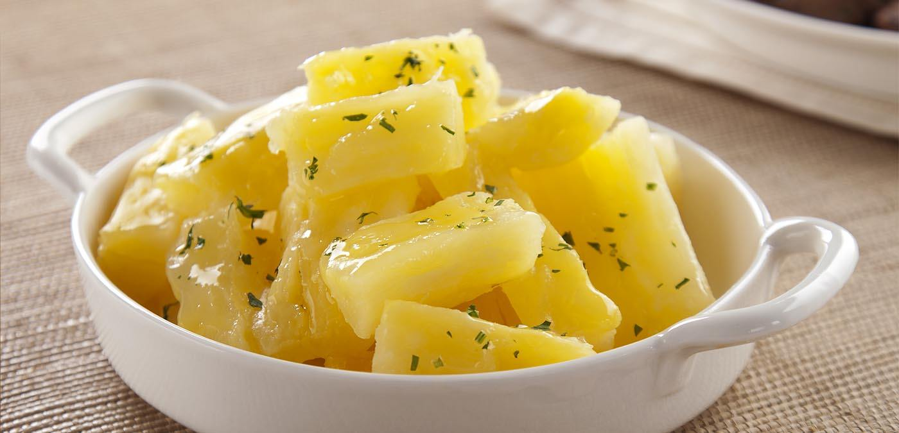
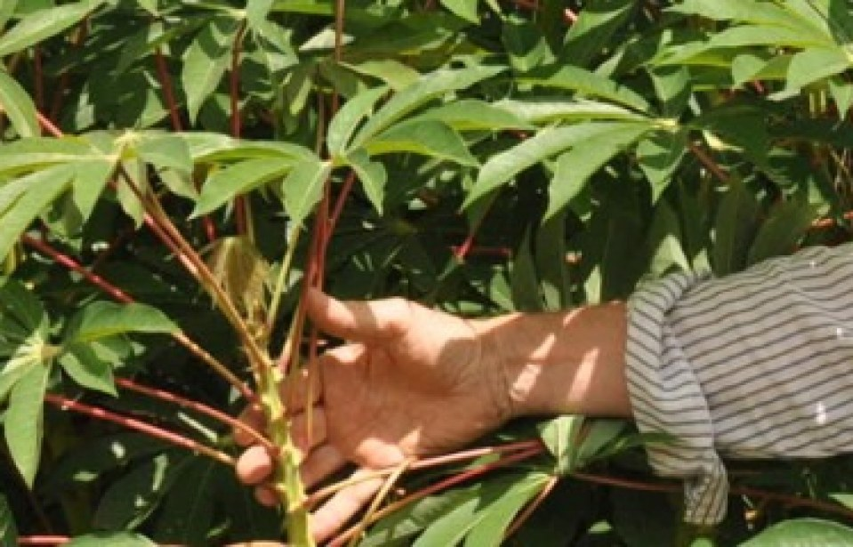

O Preparo: Raiz
- Cozida: Após descascar e cortar em pedaços, a raiz deve ser cozida em água com sal até ficar macia. É importante ressaltar que a mandioca contém linamarina, uma substância que, ao ser ingerida crua ou mal cozida, pode liberar ácido cianídrico, altamente tóxico. Portanto, é essencial cozinhar bem a raiz para eliminar essa substância.
- Frita: Após o cozimento, a mandioca pode ser cortada em pedaços e frita até dourar, resultando em uma textura crocante por fora e macia por dentro.
- Purê: A raiz cozida pode ser amassada com manteiga ou azeite, criando um purê cremoso que acompanha diversos pratos.
A raiz da mandioca pode ser consumida cozida, frita ou assada. É importante cozinhar bem a raiz para eliminar substâncias tóxicas presentes em algumas variedades.
O Preparo: Ramas
As ramas da mandioca podem ser utilizadas em saladas, refogados ou como acompanhamento. Elas são ricas em fibras e nutrientes.
O Preparo: Folhas
- Refogada: Após a colheita, as folhas podem ser cozidas com temperos, como alho, cebola e azeite, servindo como acompanhamento.
- Sopa: Acrescentadas em sopas para sabor e nutrientes.
- Fermentação Em algumas regiões, as folhas de mandioca brava são fermentadas por vários dias para remover o ácido cianídrico antes de serem consumidas. Esse processo é essencial para garantir a segurança alimentar.
As folhas da mandioca são comestíveis e podem ser utilizadas em sopas, refogados ou como recheio. Elas são ricas em proteínas e vitaminas.